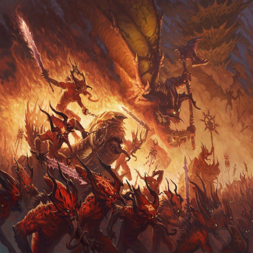
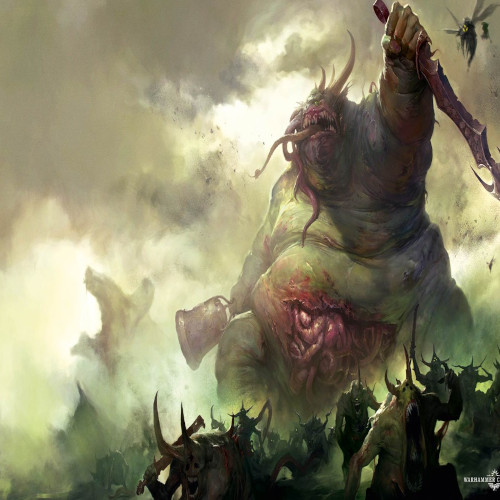
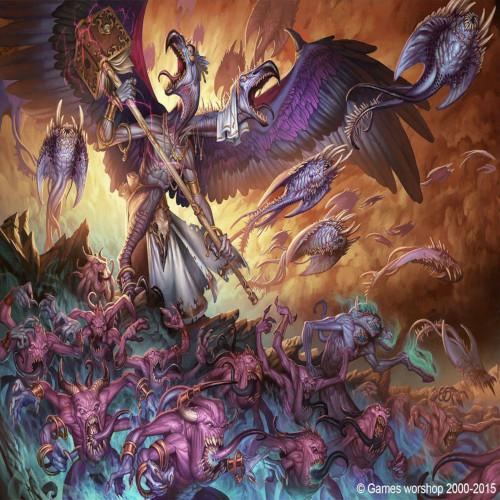
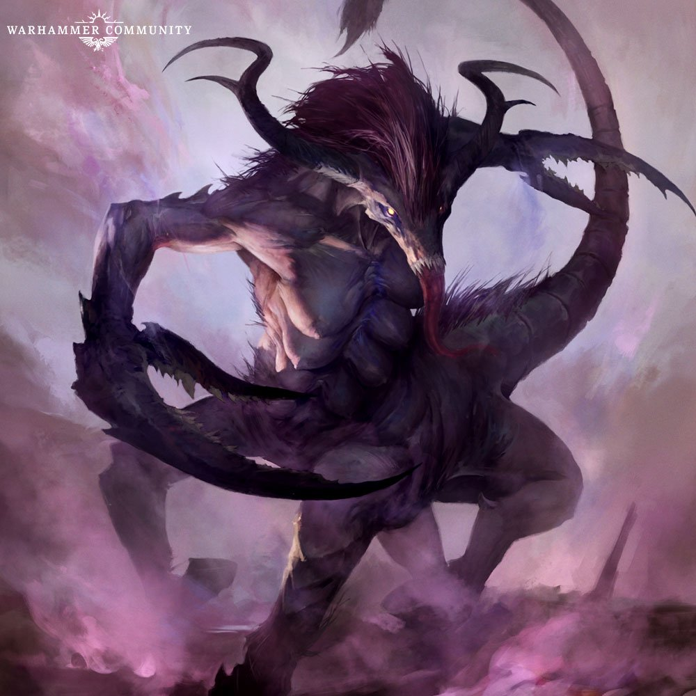

"Ask not the Eldar a question, for they will give you three answers, all of which are true and terrifying to know."
"Forget the promise of progress and understanding, for the grim dark future there is only war. There is no peace amongst the stars, only an eternity of carnage and slaughter, and laughter of thirsting gods".
Millions years ago, a race being known as The Old Ones, strange creatures possessing almost god-like powers, shaped the climate and geography of this world. These creatures were said to be alien to the world and were crafters and engineers. They looked upon this newly discovered world and found it good, and knew that it would play the central role in the destiny of the universe, so they took to steering its path towards the warmth of the sun, and forged its continents in accordance with patterns of ancient prophecy. To aid in their ordering, they created so-called Polar Gates at the northern and southern extremes of the planet which allowed them to travel instantaneously through the vast space that separated their various colonised worlds. The Old Ones would later pay the price for their arrogant intrusions. For their Warp Gates at the poles of the world, each dwarfing the greatest mountains, were destroyed as the spirit realm beyond the veil writhed and boiled with the changing of the mortal plane.

The Warp Gates collapsed in an epoch-shattering explosion, flattening continents and replacing the constructions with massive seas of boiling Chaos where reality and the aethyr overlapped. Hordes of daemonic creatures charged into the world and slaughtered the Old Ones, bringing their shining civilisation to its knees.
-

Khorne
-

Nurgle
-

Tzeentch
-

Slaanesh
It was later revealed by the Elven goddess Lileath, that the whole world is doomed to fall. No matter what the mortal nations of the world do, Chaos will inevitably triumph. This is a part of a great cycle that has repeated itself since the dawn of time. A Creator arises and gives life to a barren world, then his family quarrels, culminating in blows that disrupt the world's precious balance and allows Chaos to pour in through the wounds, inevitably consuming it once more. All the gods of the world were in fact the survivors of the previous world, a world that was consumed in darkness, and those that survived it would come to lead a new life in the next. And so it was that the world's doom would eventually arrive, and Chaos will forever rule it as its own. This was a prophecy which ultimately came to fruition during the End Times when the Warhammer World was unmade by the power of Chaos and was replaced with the birth of a new Creation from its battered heart, the Mortal Realms.